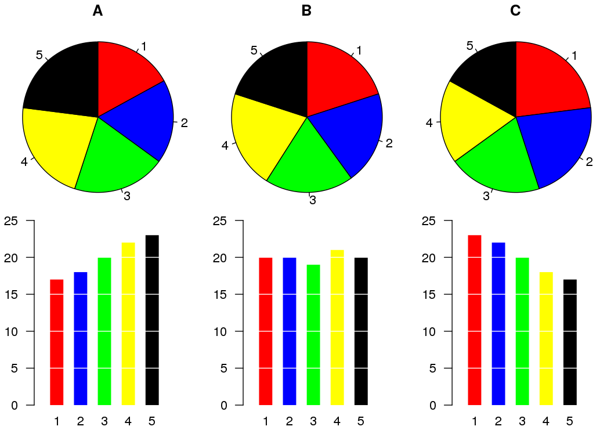
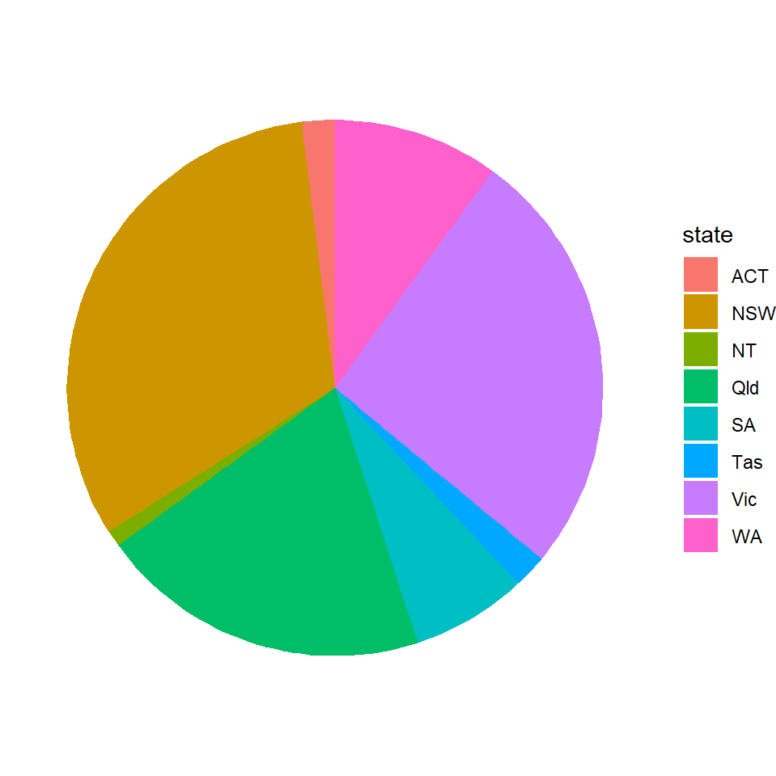
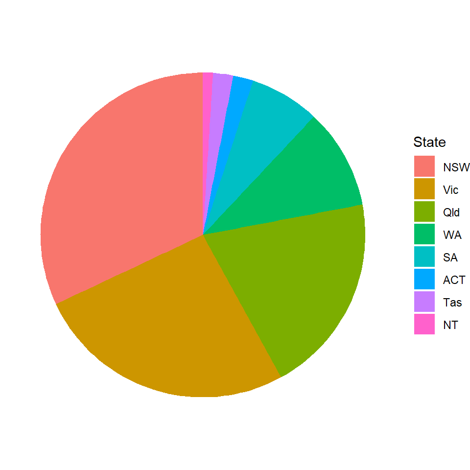
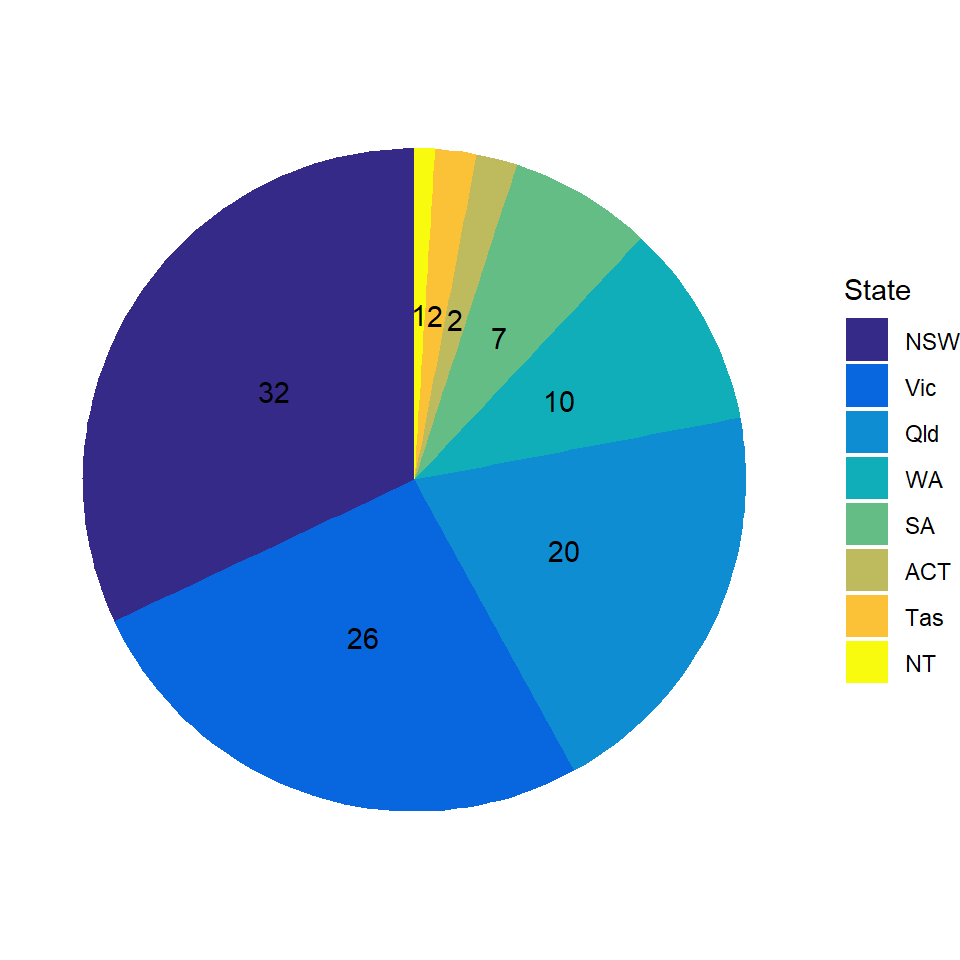
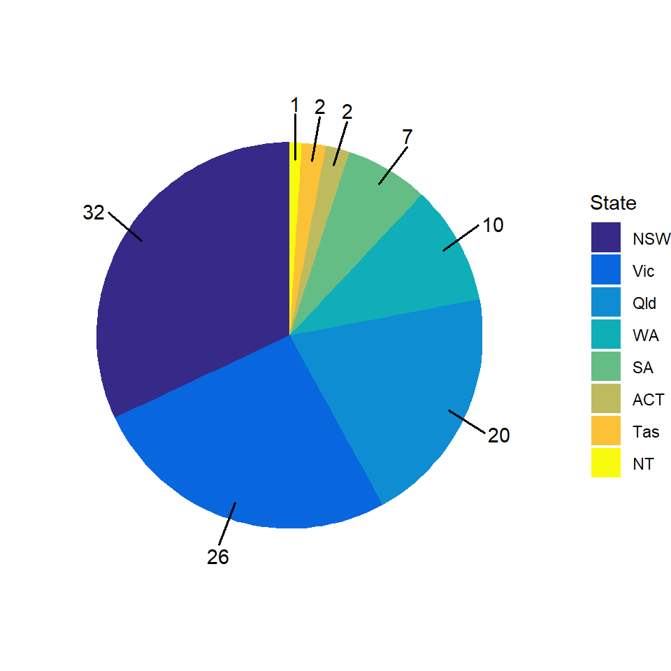
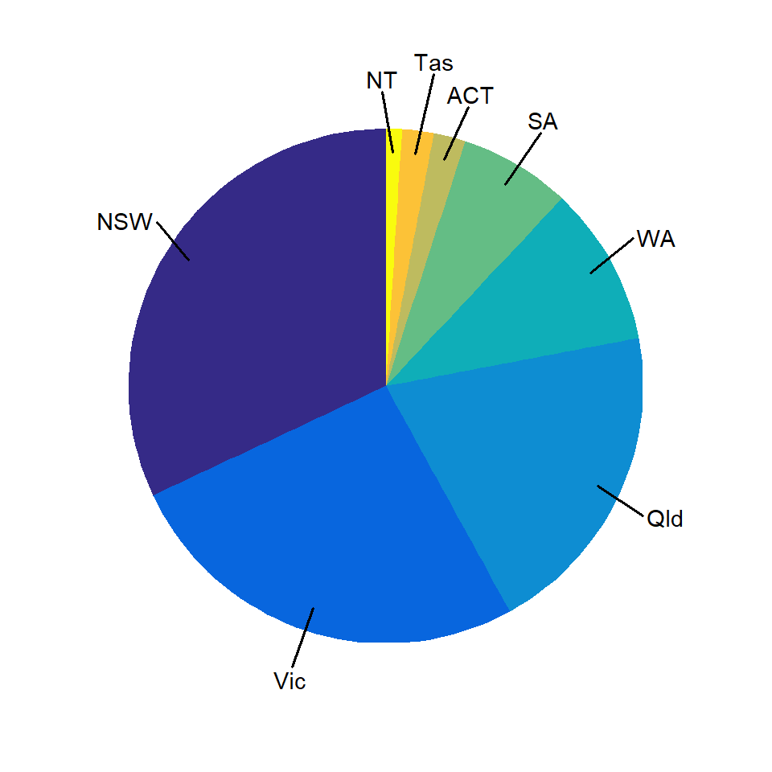
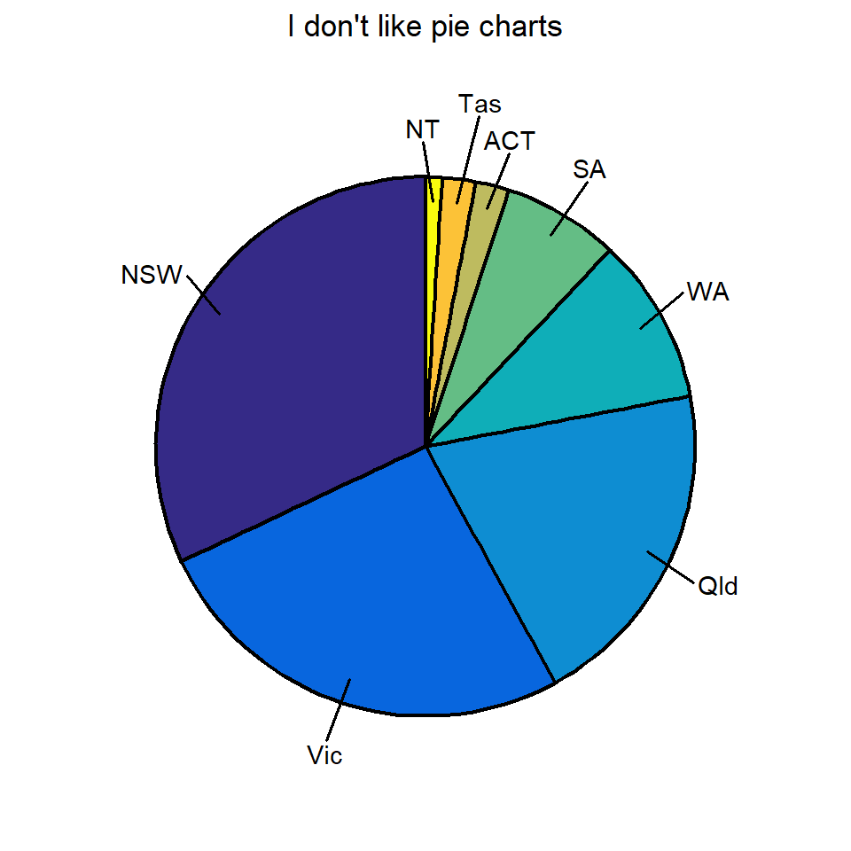
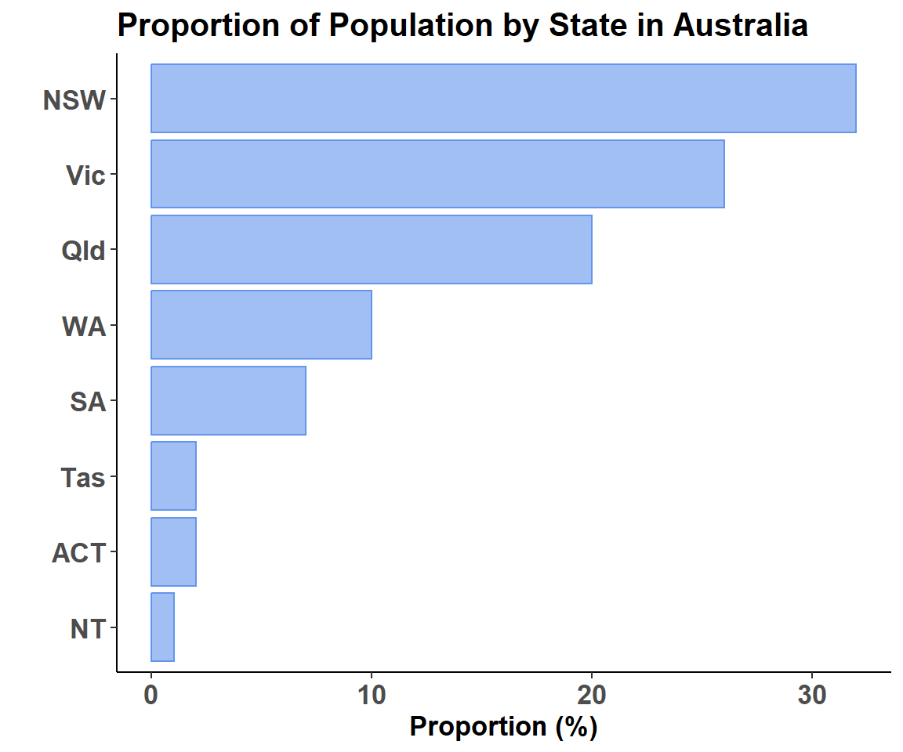
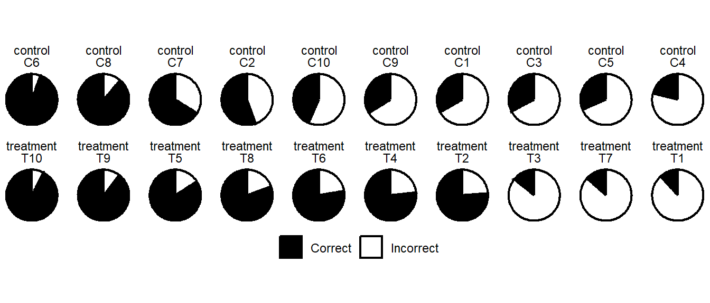

{kind=link}
aus <- data.frame(
state = c("NSW","Vic","Qld","WA","SA","Tas","ACT","NT"),
prop = c(32,26,20,10,7,2,2,1)
)
aus state prop
1 NSW 32
2 Vic 26
3 Qld 20
4 WA 10
5 SA 7
6 Tas 2
7 ACT 2
8 NT 1Friends don’t let friends use pie charts except in specific situations. I’ll discuss those at the end. But why are pie charts bad? Basically humans are very bad at estimating quantities based on angles - and pie charts (and donut charts) use slices. This can lead to situations in which we perceive groups to have equivalent areas, but they do not. This is particularly a problem when we are plotting data including more than 2 groups. Much more often, we can represent the data more efficiently using a bar graph.

Image credit: wikimedia
But, for the sake of completeness, let’s look at how pie charts could be coded in ggplot2. But, please, don’t ever make them.
Pie charts with coord_polar()
Here are some data showing the proportion of Australia’s population in each state or territory:
aus <- data.frame(
state = c("NSW","Vic","Qld","WA","SA","Tas","ACT","NT"),
prop = c(32,26,20,10,7,2,2,1)
)
aus state prop
1 NSW 32
2 Vic 26
3 Qld 20
4 WA 10
5 SA 7
6 Tas 2
7 ACT 2
8 NT 1And here is some ggplot2 code to make a pie chart. The trick is to make a bar graph that gets turned into a circle with coord_polar.
library(tidyverse)
ggplot(aus, aes(x="", y=prop, fill=state)) +
geom_bar(stat="identity") +
coord_polar("y") +
theme_void()
I think it looks horrendous. It’s also plotted it in alphabetical order, so we could tell it to plot from highest to lowest proportion using reorder. I’m also editing the legend title using labs.
ggplot(aus, aes(x="", y=prop, fill=reorder(state,-prop))) +
geom_bar(stat="identity") +
coord_polar("y") +
theme_void() +
labs(fill="State")
It’s still awful. Below I’m adjusting the colors using the parula palette from the R package pals. I’m also adding the size of each area with geom_text().
ggplot(aus, aes(x="", y=prop, fill=reorder(state,-prop))) +
geom_bar(stat="identity", width=1) +
coord_polar("y", start=0) +
theme_void() +
labs(fill="State") +
geom_text(aes(label = prop), position = position_stack(vjust = 0.5)) +
scale_fill_manual(values=pals::parula(nrow(aus)))
As can be seen from the above, it can actually be quite painstaking to add the text in the right place - especially if there are lots of small segments.
One way I have found around this is to use the code below to calculate the starting position of where labels should go and then to use geom_text_repel() to wiggle the labels.
Calculate starting positions:
aus <- aus %>%
arrange(prop)
aus$pos <- (cumsum(c(0, aus$prop)) + c(aus$prop / 2, .01))[1:nrow(aus)]
aus state prop pos
1 NT 1 0.5
2 Tas 2 2.0
3 ACT 2 4.0
4 SA 7 8.5
5 WA 10 17.0
6 Qld 20 32.0
7 Vic 26 55.0
8 NSW 32 84.0Adding labels which convey the proportions with label=prop inside geom_text_repel():
library(ggrepel)
ggplot(aus, aes(x="", y=prop, fill=reorder(state,-prop))) +
geom_bar(stat="identity", width=1) +
coord_polar("y", start=0) +
theme_void() +
labs(fill="State") +
scale_fill_manual(values=pals::parula(nrow(aus))) +
geom_text_repel(aes(x = 1.4, y = pos, label = prop),
nudge_x = .3,
segment.size = .7,
show.legend = FALSE) 
Alternatively, we can ditch the legend and use the labels to add the categories. Despite me writing all this code - we shouldn’t be bothering with adding numbers to pie chart segments, we should just be making bar graphs where you can actually see how much is in each group. Nonetheless, this time with category labels with label=state:
ggplot(aus, aes(x="", y=prop, fill=reorder(state,-prop))) +
geom_bar(stat="identity", width=1) +
coord_polar("y", start=0) +
theme_void() +
labs(fill="State") +
scale_fill_manual(values=pals::parula(nrow(aus))) +
geom_text_repel(aes(x = 1.4, y = pos, label = state),
nudge_x = .3,
segment.size = .7,
show.legend = FALSE) +
theme(legend.position = 'none')
One final tweak - we can make the segments more pronounced by adding a line color and a linewidth to the geom_bar() . I also add a title in labs() and position it in the center with the plot.title theme element and hjust = 0.5.
ggplot(aus, aes(x="", y=prop, fill=reorder(state,-prop))) +
geom_bar(stat="identity", width=1, linewidth=.75, color='black') +
coord_polar("y", start=0) +
theme_void() +
labs(fill="State",
title = "I don't like pie charts") +
scale_fill_manual(values=pals::parula(nrow(aus))) +
geom_text_repel(aes(x = 1.4, y = pos, label = state),
nudge_x = .3,
segment.size = .7,
show.legend = FALSE) +
theme(legend.position = 'none',
plot.title = element_text(hjust = 0.5)) 
With all the above being said. Here’s how I would actually plot the above data. In a bar chart:
ggplot(aus, aes(x=reorder(state,prop), y=prop)) +
geom_col(color='cornflowerblue', fill='cornflowerblue', alpha=.6) +
theme_classic() +
coord_flip() +
xlab("") +
ylab("Proportion (%)") +
ggtitle("Proportion of Population by State in Australia") +
theme(axis.text = element_text(face='bold', size=rel(1.2)),
axis.title = element_text(face='bold', size=rel(1.2)),
plot.title = element_text(face='bold', size=rel(1.4)),) 
The one exception to the “pie charts are bad” rule may be if we are representing proportions between two groups, especially when we wish to compare across a number of different subjects. For example, imagine we were running a study where we measure the proportion of correct answers given by subjects on a memory task in a control group and in a treatment group where they are given a proposed memory enhancing drug. In such a dataset, we may record the proportion of correct and incorrect responses for each subject in a dataframe like the one below:
# Generating Random Data for Example
set.seed(71)
df <- data.frame(
Subject = c(paste0("C",1:10),paste0("T",1:10)),
Group = rep(c('control', 'treatment'), each=10),
Correct = runif(20)
)
df$Incorrect <- 1 - df$Correct
head(df) Subject Group Correct Incorrect
1 C1 control 0.3329281 0.66707194
2 C2 control 0.5551039 0.44489613
3 C3 control 0.3273700 0.67263004
4 C4 control 0.2116670 0.78833304
5 C5 control 0.3161214 0.68387864
6 C6 control 0.9472664 0.05273357If you glance at the final plot a few lines below, you will notice that we have plotted individuals in the control group on the first row, and individuals from the treatment group on the second row. We have also plotted individuals from highest to lowest proportion of correct responses in each group. To do this, we need to set the levels of the Subject factor to be in this order. We grab these names in the appropriate order by using arrange() to sort the data (controls sorted by highest to lowest, then treatments sorted by highest to lowest), and then using pull() to take the names.
subjs <- df %>%
arrange(Group,-Correct) %>%
pull(Subject)
subjs [1] "C6" "C8" "C7" "C2" "C10" "C9" "C1" "C3" "C5" "C4" "T10" "T9"
[13] "T5" "T8" "T6" "T4" "T2" "T3" "T7" "T1" To get the data into plotting format, we need to pivot the data into long form using pivot_longer(). Then we can set our factor level.
df <- df %>% pivot_longer(cols=3:4, names_to="choice")
df$Subject <- factor(df$Subject, levels = subjs)
head(df)# A tibble: 6 x 4
Subject Group choice value
<fct> <chr> <chr> <dbl>
1 C1 control Correct 0.333
2 C1 control Incorrect 0.667
3 C2 control Correct 0.555
4 C2 control Incorrect 0.445
5 C3 control Correct 0.327
6 C3 control Incorrect 0.673Then we use facet_wrap() to plot by both Group and Subject so that we get the text above each pie chart. I used a black and white fill of the pie charts as it makes it easy to look at how subjects vary.
ggplot(df, aes(x="", y=value, fill=choice)) +
geom_bar(stat="identity", width=1, linewidth=.75, color='black') +
coord_polar("y", start=0) +
theme_void() +
facet_wrap(~Group*Subject,nrow=2) +
scale_fill_manual(values=c("black","white")) +
theme(legend.position = 'bottom',
legend.title = element_blank())
This sort of pie chart I actually secretly quite like - and it is probably the only one that I would ever willfully make.